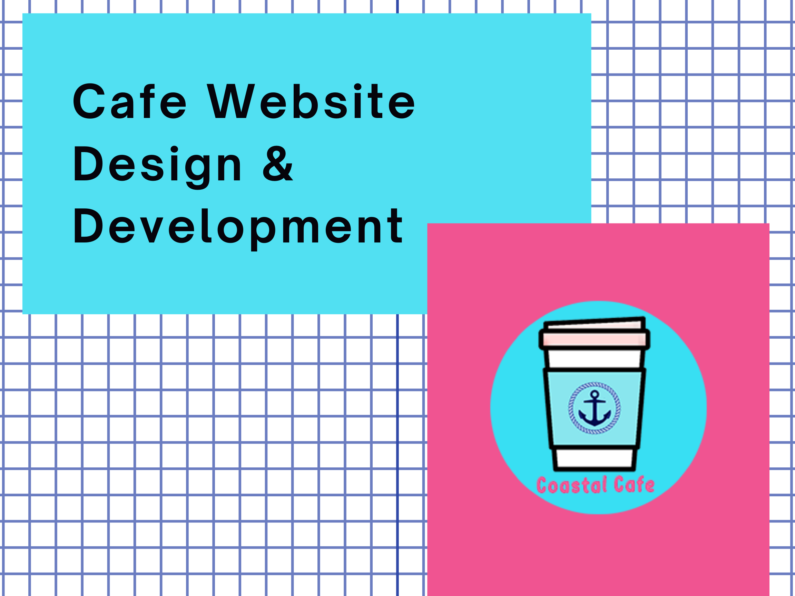
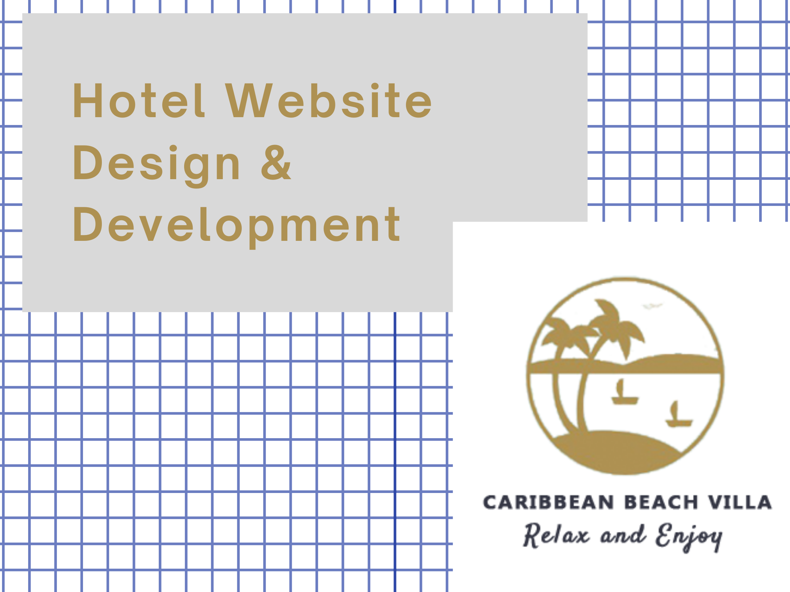
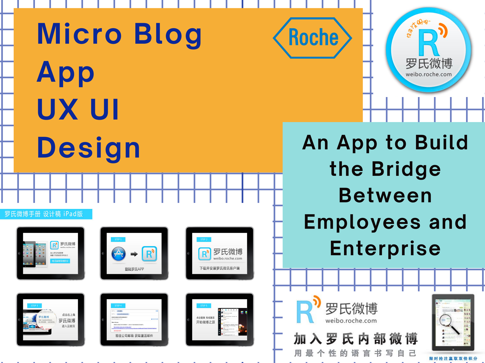

World Trade Center Atlanta Website Redesign
As an international business community, it is about to launch new Academy page to its official website.
Overview: To make the WTC Atlanta website a more contemporary international business community, my project aims to design a prototype focusing on the Home and Academy page, which provides a platform for members and partners to explore and share business resources and learn and develop business skills.
Pain Points: Newly enrolled international students have few resources to help themselves settle down in local community and feel at home.
Challenges: How to promote the app among students? What benefits can they get?
Solutions: Add event function to let users create activities or clubs and invite friends to join; Provide carpool, membership sharing and coupon referral options to bring convenience to new students; With a unique QR code, users can refer friends to scan and install the app directly to get referral points.
My Tasks: I drafted the conceptual map based on user research, turned user insights into user flow and lo-fi wireframes. I designed the logo, icons and hi-fi mockups. I also joined the development team to test and deploy the app over the 3rd party platform and launched it on App Store and Google Play.
Design Process
Information Architecture
Wireframes & Prototypes
Learning
- Less is more: Interfaces need to be cleared and organized. Avoid cluttered content and layout.
- Match between system and the real world: Use words, icons, and concepts familiar to the users that can help to build an intuitive user experience.
- Prioritize certain features or content: Users consider recent news, updates, resources are the most significant content on the home page.
- Credibility is a plus: Endorsements from well-known academic institutions or organization can make courses more trustworthy and persuasive.
- Diversity and cross-region: Content such as map, news, testimonials can be more cross-culture and worldwide.

Duration: 3 months
Methods: Card Sort, Interviews, Comparative Analysis, Usability Tests, Wireframes, Prototyping
Tools: Adobe XD, Sketch, Optimal Workshop, UserTesting
View Prototype with XDUpper Hudson Wine Trail Website Redesign
An amazing New England getaway place for family gathering, team building and wine tasting in the post-pandemic.
Pain Points: Users couldn’t find a lot of points of interest form the website; Some know little about the grape and wine differences. Locations is distant from downtown.
Challenges: Current website is with incomplete context and cluttered layout. News is piece by piece. No consistent design system.
Solutions: Highlight its market value. Use CMS to keep content consistent and well-organized. Provide customized itineraries and FAQs. Collaborate with other wineries / diners to provide daily tour activity.
My Tasks: Worked as a team leader to coordinate the user interviews and manage project timeline. To optimized user interactions, I designed the survey questionnaires to better understand use behaviors. I used WordPress CMS to reorganize the content and based on the conceptual map, I redesigned the layout, introduced Google Map API for users to customized their tour route. I also designed the coupons and posters to give a fresh and consistent feel about the brand.
Project Process
Research
User Personas
Information Architecture
Wireframes
Learning & Rethink
- Listen to the users first, understand what they expect from the product and tap into the data with goal-oriented outcomes, and then follow the best practice to design the interactive product.
- A good interactive website design should improve the business strategy and increase business value for a company.
- Collect diverse data can help a business to realize more about its targeting audiences because it improves the business according to its result of data analytics.
Duration: 3 months
Methods: Brand Analysis, Competative Analysis, User Personas, Wireframes, Prototyping
Tools: Google Analytics, Figma, InVision, Slack, WordPress
View on WordPressUBoostUs App Design & Development
A mobile coupon app that connects users with their friends by sharing coupons via QR code and getting boost points.
Business Goals: Provide platform for local stores to promote deals to customers; Encourage users to invite their friends to register to get boost points.
User Needs: Find local hot deals; Redeem coupon with boost points that they collected via inviting friends.
My Tasks: Before the sketch, I did competitive research and user persona to define the target audience, context and functionalities for this app. I also worked with marketing team to analyze and draft the user flows based on the research result and scenarios. I used Sketch and InVision for the wireframes and final mockups, and Photoshop and Illustrator for color palette and icon designs. Working as an agile team, we've gained team work spirits to push the project move forward effectively and smoothly via Jira. In phase II of the project, I finished the mockup with assigned features and functionalities.
Prototypes

Duration: 2 months
Methods: User Persona, Competitive Analysis, Wireframe, Prototyping
Tools: InVision, Sketch, Adobe Photoshop, Illustrator, Jira
View Prototype with InVisionMyVrends App Design & Development
A social life app that aims to help students host events, activities or clubs to meet new friends with same interests.
Pain Points: Newly enrolled international students have few resources to help themselves settle down in local community and feel at home.
Challenges: How to promote the app among students? What benefits can they get?
Solutions: Add event function to let users create activities or clubs and invite friends to join; Provide carpool, membership sharing and coupon referral options to bring convenience to new students; With a unique QR code, users can refer friends to scan and install the app directly to get referral points.
My Tasks: I drafted the conceptual map based on user research, turned user insights into user flow and lo-fi wireframes. I designed the logo, icons and hi-fi mockups. I also joined the development team to test and deploy the app over the 3rd party platform and launched it on App Store and Google Play.
SDLC Process
UI Design


Duration: 6 months
Methods: Interviews, Card Sort, Usability Testing, Wireframes, Prototyping, IOS/Android App Development
Tools: Optimal Workshop, Figma, InVision, Adobe Photoshop, Firebase, Apple Developer, Thunkable, VS Code
View Prototype with FigmaIOS Download
Android Download
RedWood EDA Website Redesign
A silicon chip maker startup business that prvides techniques and turotials for revolutionizing the silicon industry with "transaction-level design" capabilities for ASIC FPGA and cloud FPGA design.
Pain Points: It has an existing website with domain. However, it isn't interactive and eye-catching. The content is cluttered and information is outdated.
Challenges: How to promote the new brand? What content should be included? How to make the website more consistent?
Solutions: Use CMS to reorganize the content. Add tutorial videos to provide visual experience for its techniques. Design a new logo and use design system to align its design patterns.
My Tasks: As a team leader, I analyzed existing problems and challenges, drafted to-do-list for the upgrade of the website. I mocked up the wireframe on Adobe XD. I also designed the logo and prototype for the new website. For the next step, I drafted the conceptual map and built the website on Wix. I kept the core products and services sections, and I also add the education and contact sections to make the website more interactive with its users.
Before & After

Duration: 2 months
Methods: Interviews, Wireframe, Prototyping
Tools: Adobe Photoshop, XD, Illustrator, Wix
Visit SiteCoastal Cafe Website Design & Development
A business transition proposal for the local small physical store to run online business during the pandemic.
In this project, I designed and developed a responsive website for Coastal Cafe. The overall color palette is coastal style. The wireframes were scratched on XD. I designed the logo and banner on Photoshop. Part of the images were taken by me. The menus were designed on Canva. All the codes were created from scratch on Visual Studio Code. I used phpMyAdmin to manage the database.
Preview
Duration: 1 months
Methods: Market Analysis, Competitive Research, Wireframe, Prototyping
Tools: Google Analytics, Adobe Photoshop, XD, Canva, VS Code, MySQL
Visit SiteV-loop Video App Design & Development
A web-based video sharing app that allows users to record individual video and get stitched with your friend's together as a group video to share with your family and friends.
I did the competative research and mocked up the prototypes in Sketch and Figma with iterations after several rounds of brainstorming and interviews with the spnosor and end users. I also commpleted writing the codes for front-end, including the back-end web server and database parts. Next step, I'll work with the back-end developer to apply the video API to it.
Mockups

Duration: 1 month
Methods: Competative Research, Interviews, Usability Tests, Mockup, Web Development, Cloud
Tools: Adobe Illustrator, Sketch, Figma, VS Code, MySQL, AWS
View Prototype with FigmaCaribbean Beach Villa Website Design & Development
A local hotel website that provides a great getaway place when post-pandemic. It provides online room reservation and catering order services.
I mocked up the website from scratch during the pandemic, aiming to provide some ideas for local small business to swtich from traditonal brick-and-mortar mode to e-commerce mode.
Preview
Duration: 2 months
Methods: Competative Analysis, Card Sorting, Wireframes, Prototyping, Web Development
Tools: Adobe XD, Optimal Workshop, UserTesting, VS Code, phpMyAdmin, MySQL
By the end of the project, I have collected insights and feedbacks from different groups and turned all findings into the prototype that meets WTC Atlanta's design guidelines. and got their recognition for the work.
Visit SiteRoche Micro Blog App Design
A twitter-like mobile app designed to engage employees to communicate and participate in trending corporate events.
I did user interviews with stakeholders and users to define the business goals and user goals. Based on research analysis, I created personas, sketched task flow and journey mapping, and mocked up the app from scratch.
Design Pattern
App UI Design
Duration: 6 months
Methods: Qualitative Research, User Interview, Persona, Journey Mapping, Prototyping, Testing
Tools: Adobe Illustrator, XD, Keynote

Danone Website Design
Featured website update focusing on corporate ad-hoc events such as annual employee survey, quarterly seminar, etc.
I interviewed with different stakeholders and users to define the features, objectives and theme. By qualitative and quantitative research methods, we aligned the context and diagramed user insights into wireframes and mockups. I also deisgned the posters and banners featuring different topics.
UI Design

Duration: 6 months
Methods: User Research, Wireframes, Prototyping, Graphic Design
Tools: Photoshop, Illustrator, XD, Keynote
Dumex Website Design
Website redesign following corporate's new vision and mission.
After interviewed with stakeholders and end users, I collected the pain points and insights to brainstorm with team. Once we aligned the story mapping, I sketched the wireframes and did iterations after secondary interviews. Besides the high-fidelity mockups, I also deisgned relevant icons, banners and posters for the communication template.
Dumex Template
Duration: 6 months
Methods: Competitive Analysis, User Interview, Story Mapping, Prototyping, Graphic Design
Tools: Survey Monkey, Adobe XD, Illustrator